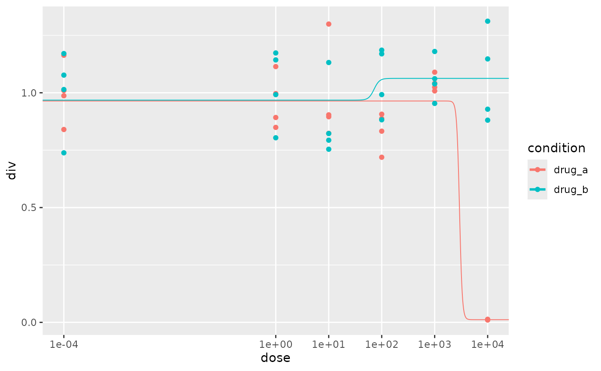
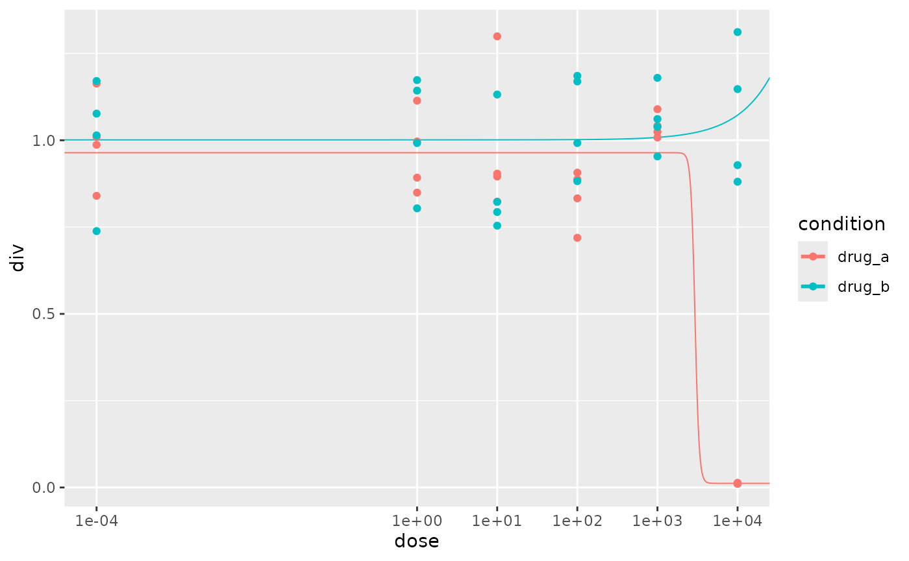

Using ezmtt
using-ezmtt.RmdTidying
Typically, you’ll start the process with a raw spectramax
.txt file. It’ll look something like this:
mtt_txt <- system.file("extdata", "mtt.txt", package = "ezmtt")
read_lines(mtt_txt)
#> [1] "##BLOCKS= 2 "
#> [2] "Plate:\tPlate#1\t1.3\tPlateFormat\tEndpoint\tAbsorbance\tRaw\tFALSE\t1\t\t\t\t\t\t2\t562 660\t1\t12\t96\t1\t8\tNone\t"
#> [3] "\tTemperature(\xa1C)\t1\t2\t3\t4\t5\t6\t7\t8\t9\t10\t11\t12\t\t1\t2\t3\t4\t5\t6\t7\t8\t9\t10\t11\t12\t\t"
#> [4] "\t39.10\t0.5625\t0.4221\t0.6188\t0.4454\t0.5272\t0.0471\t0.5126\t0.475\t0.5376\t0.5558\t0.503\t0.4442\t\t0.0688\t0.0617\t0.0674\t0.0606\t0.0648\t0.0427\t0.0642\t0.0619\t0.0663\t0.0621\t0.0611\t0.0576\t\t"
#> [5] "\t\t0.4833\t0.4869\t0.4415\t0.414\t0.5086\t0.0486\t0.3672\t0.5572\t0.3897\t0.4283\t0.5571\t0.5438\t\t0.0644\t0.064\t0.0614\t0.0606\t0.0666\t0.0431\t0.0597\t0.0686\t0.0593\t0.0609\t0.0658\t0.066\t\t"
#> [6] "\t\t0.4201\t0.4414\t0.4103\t0.4398\t0.5038\t0.0489\t0.5552\t0.3958\t0.3731\t0.4749\t0.4958\t0.6112\t\t0.0636\t0.0627\t0.0609\t0.0632\t0.0692\t0.0444\t0.0677\t0.061\t0.0591\t0.0618\t0.0633\t0.065\t\t"
#> [7] "\t\t0.4912\t0.5407\t0.4493\t0.3642\t0.4916\t0.0503\t0.4842\t0.538\t0.3975\t0.5459\t0.4495\t0.4151\t\t0.0627\t0.0679\t0.0657\t0.059\t0.0638\t0.0447\t0.0619\t0.062\t0.055\t0.0589\t0.0524\t0.0484\t\t"
#> [8] "\t\t0.5823\t0.4504\t0.3643\t0.3291\t0.3999\t0.064\t0.2832\t0.4228\t0.2705\t0.3568\t0.3898\t0.6187\t\t0.0682\t0.0646\t0.062\t0.059\t0.0604\t0.0457\t0.056\t0.0581\t0.0545\t0.0564\t0.0568\t0.0656\t\t"
#> [9] "\t\t0.4884\t0.4783\t0.3273\t0.4488\t0.3964\t0.0653\t0.298\t0.3884\t0.357\t0.3716\t0.363\t0.4744\t\t0.0629\t0.0667\t0.06\t0.0642\t0.0614\t0.0474\t0.0588\t0.0615\t0.06\t0.0609\t0.0601\t0.0647\t\t"
#> [10] "\t\t0.5693\t0.4309\t0.3766\t0.3664\t0.4332\t0.075\t0.2926\t0.3781\t0.2877\t0.3075\t0.3601\t0.4789\t\t0.0756\t0.069\t0.07\t0.0707\t0.0704\t0.0534\t0.066\t0.0673\t0.0638\t0.0634\t0.0674\t0.0693\t\t"
#> [11] "\t\t0.5525\t0.4618\t0.4009\t0.4053\t0.3731\t0.0689\t0.5157\t0.3558\t0.4465\t0.4003\t0.3938\t0.7763\t\t0.074\t0.0709\t0.0709\t0.0685\t0.0687\t0.0532\t0.0717\t0.0695\t0.0707\t0.0739\t0.0688\t0.0865\t\t"
#> [12] "\t\t"
#> [13] "~End"
#> [14] "Original Filename: Untitled Date Last Saved: Unsaved"
#> [15] "Copyright \xa9 2003 Molecular Devices. All rights reserved."The first step is to turn this into a workable object. You can do
this by using the mop::read_spectramax function:
mtt <- read_spectramax(mtt_txt)
mtt
#> <spectramax[4]>
#> [[1]]
#> [[1]]$data
#>
#> 12
#> ________________________
#> | ◯ ◯ ◯ ◯ ◯ ◯ ◯ ◯ ◯ ◯ ◯ ◯
#> | ◯ ◯ ◯ ◯ ◯ ◯ ◯ ◯ ◯ ◯ ◯ ◯
#> | ◯ ◯ ◯ ◯ ◯ ◯ ◯ ◯ ◯ ◯ ◯ ◯
#> | ◯ ◯ ◯ ◯ ◯ ◯ ◯ ◯ ◯ ◯ ◯ ◯
#> 8 | ◯ ◯ ◯ ◯ ◯ ◯ ◯ ◯ ◯ ◯ ◯ ◯
#> | ◯ ◯ ◯ ◯ ◯ ◯ ◯ ◯ ◯ ◯ ◯ ◯
#> | ◯ ◯ ◯ ◯ ◯ ◯ ◯ ◯ ◯ ◯ ◯ ◯
#> | ◯ ◯ ◯ ◯ ◯ ◯ ◯ ◯ ◯ ◯ ◯ ◯
#>
#>
#> Start corner: tl
#> Plate dimensions: 8 x 12
#>
#> [[1]]$type
#> [1] "Plate"
#>
#> [[1]]$wavelengths
#> [1] "562" "660"
#>
#>
#> # Date: 2024-11-02This object - a spectramax object - will have your data
locked away in it. You can make it dump these data in a easy, workable
data.frame by using mop::scrub:
scrub(mtt)
#> # A tibble: 96 × 6
#> .row .col nm562 nm660 exp_date is_tidy
#> <int> <dbl> <dbl> <dbl> <date> <lgl>
#> 1 1 1 0.562 0.0688 2024-11-02 TRUE
#> 2 1 2 0.422 0.0617 2024-11-02 TRUE
#> 3 1 3 0.619 0.0674 2024-11-02 TRUE
#> 4 1 4 0.445 0.0606 2024-11-02 TRUE
#> 5 1 5 0.527 0.0648 2024-11-02 TRUE
#> 6 1 6 0.0471 0.0427 2024-11-02 TRUE
#> 7 1 7 0.513 0.0642 2024-11-02 TRUE
#> 8 1 8 0.475 0.0619 2024-11-02 TRUE
#> 9 1 9 0.538 0.0663 2024-11-02 TRUE
#> 10 1 10 0.556 0.0621 2024-11-02 TRUE
#> # ℹ 86 more rowsHowever, notice that there’s no annotation to the
data.frame, experimentally speaking - that is, what the
condition of each well is.
A simple case
There are a couple ways to add annotations to your data. In the
simplest case, when you’ve used a ‘single condition per quadrant’ layout
as denoted in the protocol, you
can simply use mtt_tidy on your spectramax
object. The conditions argument will take a named
list with exactly 4 items. The names signify the condition
names, and the values are their doses. If a quadrant wasn’t used, supply
NA:
doses_a <- c(0, 1, 10, 100, 1000, 10000)
doses_b <- c(0, 1, 2, 4, 8, 16)
tidy <- mtt_tidy(mtt, conditions = list(drug_a = doses_a, drug_b = doses_b, NA, NA))
#> Lowest dose is 0, converting to 1e-04
#> Lowest dose is 0, converting to 0.0625
tidy
#> # A tibble: 48 × 6
#> .row .col nm562 nm660 dose condition
#> <int> <dbl> <dbl> <dbl> <dbl> <fct>
#> 1 1 1 0.562 0.0688 0.0001 drug_a
#> 2 1 2 0.422 0.0617 1 drug_a
#> 3 1 3 0.619 0.0674 10 drug_a
#> 4 1 4 0.445 0.0606 100 drug_a
#> 5 1 5 0.527 0.0648 1000 drug_a
#> 6 1 6 0.0471 0.0427 10000 drug_a
#> 7 2 1 0.483 0.0644 0.0001 drug_a
#> 8 2 2 0.487 0.064 1 drug_a
#> 9 2 3 0.442 0.0614 10 drug_a
#> 10 2 4 0.414 0.0606 100 drug_a
#> # ℹ 38 more rowsA more elaborate case
If you’ve plated something a bit more elaborate, not to worry - there
are still ways to use ezmtt and your preferred layout, but
you’ll need to specify it using gplate.
gplate is a package that introduces a grammar to specify
plate layouts. Once you’ve ‘told’ gplate how the plate is
laid out, you can simply run gplate::serve to get a nice
tidy ‘annotated’ data.frame.
Let’s see how it works with an example. Let’s assume you have a plate layout with conditions in column ‘bands’, each 4 replicates long:
And suppose each of them have different ‘dose ramps’:
This setup would unfortunately be impossible with a simple
mtt_tidy. Fortunately, this is quite simple for
gplate. gplate works by building up layers, or
sections, that each form a column of the end data. Generally, you’ll
start by specifying the broadest characteristics, then the finer
details. The broadest detail, of course, is the plate. The easiest way
to do this is to pull it right from the spectramax
object:
plate <- plate_data(mtt)
plate
#>
#> 12
#> ________________________
#> | ◯ ◯ ◯ ◯ ◯ ◯ ◯ ◯ ◯ ◯ ◯ ◯
#> | ◯ ◯ ◯ ◯ ◯ ◯ ◯ ◯ ◯ ◯ ◯ ◯
#> | ◯ ◯ ◯ ◯ ◯ ◯ ◯ ◯ ◯ ◯ ◯ ◯
#> | ◯ ◯ ◯ ◯ ◯ ◯ ◯ ◯ ◯ ◯ ◯ ◯
#> 8 | ◯ ◯ ◯ ◯ ◯ ◯ ◯ ◯ ◯ ◯ ◯ ◯
#> | ◯ ◯ ◯ ◯ ◯ ◯ ◯ ◯ ◯ ◯ ◯ ◯
#> | ◯ ◯ ◯ ◯ ◯ ◯ ◯ ◯ ◯ ◯ ◯ ◯
#> | ◯ ◯ ◯ ◯ ◯ ◯ ◯ ◯ ◯ ◯ ◯ ◯
#>
#>
#> Start corner: tl
#> Plate dimensions: 8 x 12We could use gplate::gp_serve on this object to
immediately turn it into a data.frame, although it wouldn’t
have any annotations:
gp_serve(plate)
#> # A tibble: 96 × 4
#> .row .col nm562 nm660
#> <int> <dbl> <dbl> <dbl>
#> 1 1 1 0.562 0.0688
#> 2 1 2 0.422 0.0617
#> 3 1 3 0.619 0.0674
#> 4 1 4 0.445 0.0606
#> 5 1 5 0.527 0.0648
#> 6 1 6 0.0471 0.0427
#> 7 1 7 0.513 0.0642
#> 8 1 8 0.475 0.0619
#> 9 1 9 0.538 0.0663
#> 10 1 10 0.556 0.0621
#> # ℹ 86 more rowsTo add annotations, we can use gplate::gp_sec:
with_conditions <- plate |>
gp_sec(
name = "condition", # Name of the column upon `gp_serve`
nrow = 8, # Number of rows per condition
ncol = 4, # Number of columns per condition
labels = c("drug_a", "drug_b", "drug_c"),
advance = FALSE # We'll talk about this later
)It can be helpful to tell if we’re on the right track in terms of
plotting our data. To this end, we can use gp_plot to plot
sections of our data:
gp_plot(with_conditions, condition)
So far so good!
Now to add doses. You’ll notice above I set
advance = FALSE. gplate allows you to pipe
calls from gp_sec from one into another, essentially
forming nested layers. However, if you want to supply
labels (here, doses) that differ between sections, you’ll need to stay
at the same layer as those sections. Thus, setting
advance = FALSE prevents from drilling down a layer.
with_doses <- with_conditions |>
gp_sec(
name = "dose",
nrow = 1, # Each set of technical replicates takes up 1 row...
ncol = 4, # ...and spans 4 columns
labels = c(
0, 0, 0,
0.01, 1, 3,
0.1, 2, 6,
1, 4, 9,
10, 8, 12,
100, 16, 15,
1000, 32, 18,
10000, 64, 21
)
)We can also plot this - although it’s not going to look great, due to
gplate automatically converting all labels to factors (a
design mistake I regret, and one we will have to contend with
shortly):
gp_plot(with_doses)Believe it or not, we’re done now - we can serve it:
tidy <- gp_serve(with_doses)
tidy
#> # A tibble: 96 × 6
#> .row .col nm562 nm660 condition dose
#> <int> <dbl> <dbl> <dbl> <fct> <fct>
#> 1 1 1 0.562 0.0688 drug_a 0
#> 2 1 2 0.422 0.0617 drug_a 0
#> 3 1 3 0.619 0.0674 drug_a 0
#> 4 1 4 0.445 0.0606 drug_a 0
#> 5 1 5 0.527 0.0648 drug_b 0
#> 6 1 6 0.0471 0.0427 drug_b 0
#> 7 1 7 0.513 0.0642 drug_b 0
#> 8 1 8 0.475 0.0619 drug_b 0
#> 9 1 9 0.538 0.0663 drug_c 0
#> 10 1 10 0.556 0.0621 drug_c 0
#> # ℹ 86 more rowsThis was a rather spartan introduction to gplate, so if
you have a more elaborate layout that can’t be solved with
mtt_tidy, see the vignettes on the gplate pkgdown
Calculating normalized optical densities
The next step is to subtract the background wavelength (which
produces a value I’ll call ’diff) and then divide it by the
diff of the lowest concentration (usually a negative
control) for that particular condition (producing a normalized optical
density, or a value I’ll call div).
Let’s tidy our data really quickly:
doses <- c(0, 1, 10, 100, 1000, 10000)
tidy <- mtt_tidy(mtt, conditions = list(drug_a = doses, drug_b = doses, NA, NA))
#> Lowest dose is 0, converting to 1e-04
#> Lowest dose is 0, converting to 1e-04
tidy
#> # A tibble: 48 × 6
#> .row .col nm562 nm660 dose condition
#> <int> <dbl> <dbl> <dbl> <dbl> <fct>
#> 1 1 1 0.562 0.0688 0.0001 drug_a
#> 2 1 2 0.422 0.0617 1 drug_a
#> 3 1 3 0.619 0.0674 10 drug_a
#> 4 1 4 0.445 0.0606 100 drug_a
#> 5 1 5 0.527 0.0648 1000 drug_a
#> 6 1 6 0.0471 0.0427 10000 drug_a
#> 7 2 1 0.483 0.0644 0.0001 drug_a
#> 8 2 2 0.487 0.064 1 drug_a
#> 9 2 3 0.442 0.0614 10 drug_a
#> 10 2 4 0.414 0.0606 100 drug_a
#> # ℹ 38 more rowsAnd then we can use mtt_calc to do all the calculations
for us:
calcd <- mtt_calc(
data = tidy,
signal = "nm562", # column containing signal absorbances
background = "nm660", # column containing background absorbances
dose = "dose", # column containing dose data
out = "div", # desired name of output column
.by = "condition" # column(s) to group by
)
head(calcd)
#> condition nm562 nm660 dose diff diff_mean div
#> 1 drug_a 0.5625 0.0688 1e-04 0.4937 0.424400 1.16328935
#> 1.1 drug_a 0.4221 0.0617 1e+00 0.3604 0.408700 0.84919887
#> 1.2 drug_a 0.6188 0.0674 1e+01 0.5514 0.416125 1.29924599
#> 1.3 drug_a 0.4454 0.0606 1e+02 0.3848 0.355000 0.90669180
#> 1.4 drug_a 0.5272 0.0648 1e+03 0.4624 0.441700 1.08953817
#> 1.5 drug_a 0.0471 0.0427 1e+04 0.0044 0.005000 0.01036758It’s that simple. Simpler, in fact, since most of these arguments can be left as their defaults, making using it look like this in practice:
mtt_calc(tidy, .by = "condition") |>
head()
#> condition nm562 nm660 dose diff diff_mean div
#> 1 drug_a 0.5625 0.0688 1e-04 0.4937 0.424400 1.16328935
#> 1.1 drug_a 0.4221 0.0617 1e+00 0.3604 0.408700 0.84919887
#> 1.2 drug_a 0.6188 0.0674 1e+01 0.5514 0.416125 1.29924599
#> 1.3 drug_a 0.4454 0.0606 1e+02 0.3848 0.355000 0.90669180
#> 1.4 drug_a 0.5272 0.0648 1e+03 0.4624 0.441700 1.08953817
#> 1.5 drug_a 0.0471 0.0427 1e+04 0.0044 0.005000 0.01036758Fitting and plotting data
Finally, to plot our data, we can use the included custom geom
geom_mtt. This will automatically try to fit these data
with a four-parameter log-logistic function with reasonable constraints
(drc::LL.4), and will gradually relax those constraints if
it fails to fit.
library(ggplot2)
ggplot(calcd, aes(dose, div, color = condition)) +
geom_mtt() +
geom_point() +
coord_trans("log10") +
scale_x_continuous(breaks = c(0.01, 1, 10, 100, 1000, 10000), minor_breaks = NULL)
Hmm - it looks like drug_b isn’t really having an
effect, but it’s still being fit with a LL.4 model. We can
override that by providing a new column to our data that specifies which
model should be used for each curve.
library(dplyr)
#>
#> Attaching package: 'dplyr'
#> The following objects are masked from 'package:stats':
#>
#> filter, lag
#> The following objects are masked from 'package:base':
#>
#> intersect, setdiff, setequal, union
calcd <- calcd |>
mutate(
model = if_else(condition == "drug_b", "lm", NA)
)Now we can supply model as the model
aesthetic to geom_mtt:
ggplot(calcd, aes(dose, div, color = condition)) +
geom_mtt(aes(model = model)) +
geom_point() +
coord_trans("log10") +
scale_x_continuous(breaks = c(0.01, 1, 10, 100, 1000, 10000), minor_breaks = NULL)
Now note that drug_b is fit linearly (although it looks
curved due to the distortion of the logarithmic plot) and
drug_a is fit with LL.4.